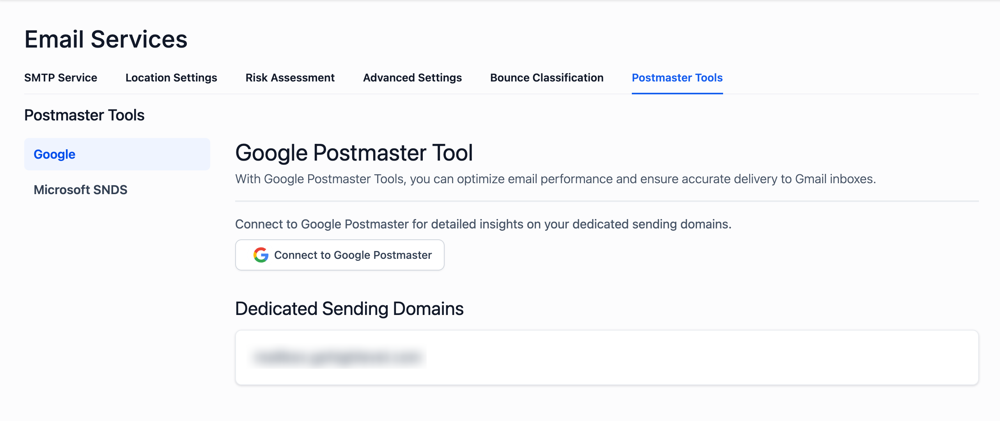
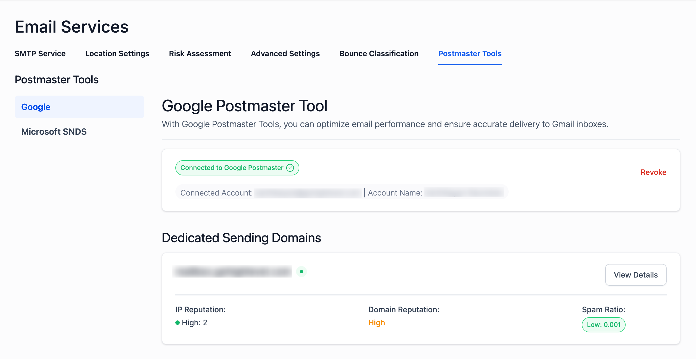
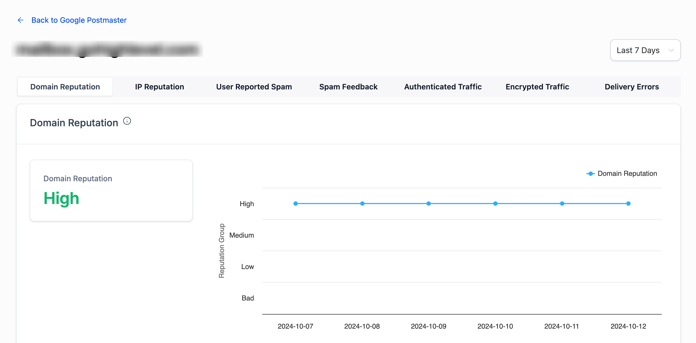

What is Google Postmaster Tools?
Google Postmaster Tools is a free platform that provides email senders with data and insights into their email deliverability, especially when sending to Gmail users. It helps track metrics such as domain and IP reputation, spam rates, and the success of email authentication protocols (SPF, DKIM, DMARC). By using this tool, email senders can better understand how Google perceives their emails and take steps to improve their sender reputation.
Google Postmaster Tools is primarily useful for email marketers and bulk senders who are looking to improve inbox placement, reduce spam rates, and maintain a strong domain reputation with Gmail users.
Table of Contents
- What is Google Postmaster Tools?
- Why Should You Use Google Postmaster Tools?
- How Can Google Postmaster Tools Help Email Senders?
- How Do I Set Up Google Postmaster Tools?
- How Do I Set Up Google Postmaster with LeadConnector?
- What Are All the Data Points Google Postmaster Tools Provides?
Why Should You Use Google Postmaster Tools?
Your sender reputation is crucial for ensuring your emails reach the inbox rather than being marked as spam. Google Postmaster Tools provides transparency into how Gmail rates your emails based on several factors:
- Spam rates: If too many users mark your emails as spam, it will affect your sender reputation.
- IP & Domain reputation: These metrics let you know if your sending infrastructure is considered trustworthy by Gmail.
- Authentication success: Tools like SPF, DKIM, and DMARC are essential to proving that your emails are legitimate. Postmaster Tools helps you monitor whether your authentication is passing.
By monitoring these metrics, you can proactively fix issues before they hurt your deliverability. If your email campaigns are not properly aligned with best practices, your emails might end up in the spam folder.
How Can Google Postmaster Tools Help Email Senders?
Google Postmaster Tools offers a variety of data that can help email senders in multiple ways:
- Domain and IP reputation tracking: Know how well Google trusts your domain and IP, which is crucial for email success.
- Spam report monitoring: This data shows how many of your emails are being marked as spam, allowing you to adjust your strategy if the rates are too high.
- Email authentication monitoring: Google will track whether your emails are successfully authenticated through SPF, DKIM, and DMARC protocols.
- Delivery errors: Identify and resolve errors that prevent your emails from being delivered.
How Do I Set Up Google Postmaster Tools?
1. Sign in to Google Postmaster Tools:
- Go to Google Postmaster Tools and sign in using your Google account.
2. Add Your Dedicated Domain:
- Once signed in, add your email sending domain. This domain must be one you have control over, and it's important that it’s set up correctly with SPF, DKIM, and DMARC authentication records.
3. Verify Domain Ownership:
- To verify that you own the domain, you need to add a TXT record to your domain’s DNS settings. Google provides this record when you register your domain with Postmaster Tools.
4. Access Data:
- After setup, it might take a few days to start seeing data like domain reputation, IP reputation, spam rate, and more.
How Do I Set Up Google Postmaster with LeadConnector?
To view your domain’s Gmail delivery reputation and other important metrics in the platform, follow these steps to connect your Google Postmaster account:
Step 1: Go to Email Services
Navigate to Settings - Email Service -> Postmaster Tools -> Google Postmaster Tool.
Step 2: Click the Connect to Google Postmaster.

Step 3: Sign in With a Google Account
Choose the Google account that has access to the domains registered in Google Postmaster Tools.

Step 4: Grant Required Permissions
On the permissions screen, check the box next to:
✅ "See email traffic metrics for the domains you have registered in Gmail Postmaster Tools."
Then click Continue to complete the connection.

Once connected, your verified dedicated sending domains will start displaying metrics pulled from Google Postmaster.

Monitor Your Data:
- We will pull all available Postmaster Tools data, including spam rates, IP reputation, and domain reputation, directly into its system so you can manage everything from one place.
What Are All the Data Points Google Postmaster Tools Provides?
Google Postmaster Tools provides several key data points for monitoring email deliverability:

- Spam Rate Dashboard: Displays the percentage of your emails that Gmail users have marked as spam.
- Domain Reputation Dashboard: Shows the reputation of your domain based on Google’s perception of your sending practices.
- IP Reputation Dashboard: Provides insight into the reputation of the IPs you use to send emails. High IP reputation means better deliverability.
- Message Authentication Dashboard: Tracks the success rate of your emails passing SPF, DKIM, and DMARC authentication protocols.
- Encryption Dashboard: Shows the percentage of emails being delivered over encrypted connections.
- Delivery Errors Dashboard: Provides details on any issues or errors preventing your emails from being delivered.
- Feedback Loop Dashboard: Tracks user-reported spam complaints to help you reduce spam rate and maintain a good reputation.